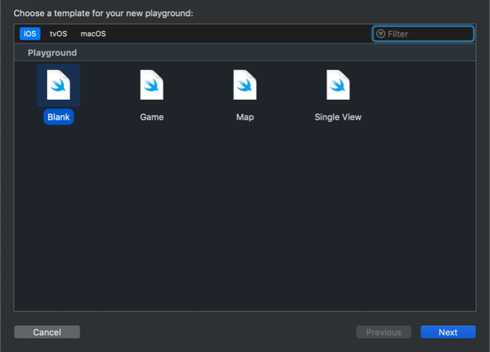
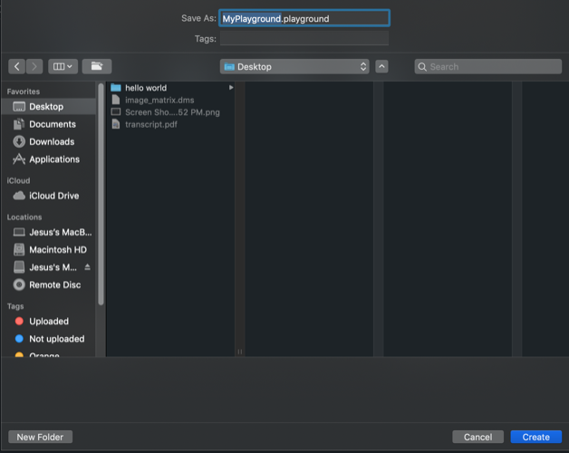
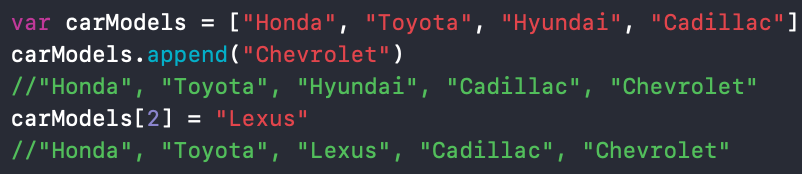
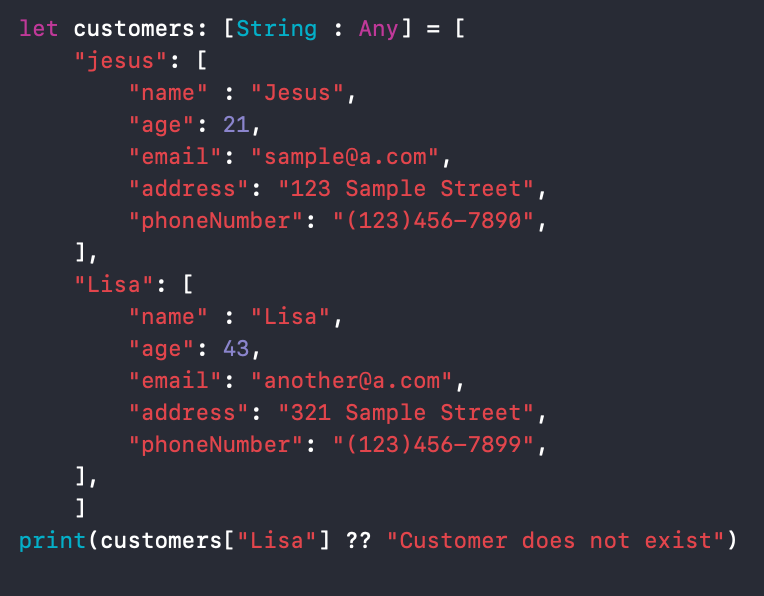

You may be wondering why I explicitly wrote the type of the variable for lastName but not for name. In reality it is not neccessary to do so
because Swift has type inference. With type inference you can avoid the extra typing if you know the only possible type for that
variable is what you want it to be. However, in some occassions type inference will be wrong and you will need to tell Swift exactly the type of
variable you want. For example if you declare var sum = 0 and at a later time attempt to add a float you will
be unable to because Swift interprets sum as a float. To get around this you would type var sum:Float = 0. Now when you attempt
to add a float to the sum you will be able to, but don't take my word for it, try it for yourself.
To try it yourself, do the following.
Launch Xcode
To do everything here the playground will be more than enough. Click on "Get started with a playground"
Select the Blank template and click "next"

Name the file whatever you want and save it in your desired location and click "create".

Printing
When making an iOS application, the use of the print() function will not show the user anything, but this is a great tool to use
for debugging your code. To use the print funtion simply type print("My string"). This will
print out "My string" to the console. To print out a variable simple do the following: print(variableName).
Loops
If you are interested in learning more about loops you can head over here.
Arrays and Dictionaries
Arrays
An array is a data type that holds only one kind of value in Swift. It can hold any single value like an integer,
string or even your own custom class that you called car. An array in Swift can be modified. What I mean by this
is that you can add values to the end of it by appending a new value to it. If you would like to know what else you can do
with an array head over here.

Dictionaries
A dictionary is a collection whose elements are a key value pair. A dictionary in Swift funtions very much like you would think. It has a key(word) and a value(definition). Every key in a dictionary has to be the same type,
however, the value can all be of different types. Finding a value in a dictionary is much simplier than with an array because all you need
to know is the key to find the value instead of haing to iterate over the whole dictionary. If you would like to learn more about dictionaries head
over here.

Now that you know some of the basics let's go make our first iOS app in Swift. Click here.